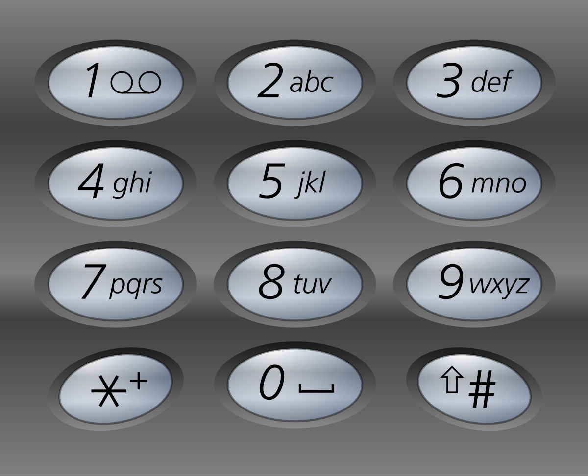

题面
给定一个仅包含数字 2-9 的字符串，返回所有它能表示的字母组合。答案可以按 任意顺序 返回。
给出数字到字母的映射如下（与电话按键相同）。注意 1 不对应任何字母。

示例 1：
输入： digits = "23"
输出：["ad","ae","af","bd","be","bf","cd","ce","cf"]示例 2：
输入： digits = "2"
输出：["a","b","c"]提示：
1 <= digits.length <= 4digits[i]是范围['2', '9']的一个数字。
思路
- 和全排列、子集是同一个回溯框架，只是每层的候选不同
三道题的决策树对比
全排列 [1,2,3]：每个位置从"所有没用过的数"里选
子集 [1,2,3]：每个位置从"后面的数"里选
电话号码 "23"：每个位置从"当前数字对应的字母"里选用 "23" 画决策树：
数字 2 对应 "abc"，数字 3 对应 "def"
第一个位置（数字2）选谁？→ 第二个位置（数字3）选谁？
""
/ | \
"a" "b" "c" ← 数字2：从 "abc" 里选
/ | \ / | \ / | \
"ad""ae""af""bd""be""bf""cd""ce""cf" ← 数字3：从 "def" 里选和全排列 子集的对比
# 全排列：每个位置从所有数里选（跳过已用的）
def dfs(path):
if len(path) == len(nums):
self.res.append(path[:])
return
for i in nums: # 候选：所有数
if i in path:
continue
path.append(i)
dfs(path)
path.pop()
# 子集：每个位置从后面的数里选
def dfs(start, path):
self.res.append(path[:]) # 每个节点都收集
for i in range(start, n): # 候选：start 之后的数
path.append(nums[i])
dfs(i + 1, path)
path.pop()
# 电话号码：每个位置从当前数字对应的字母里选
def dfs(index, path):
if index == len(digits):
self.res.append(path[:])
return
for c in phone_map[digits[index]]: # 候选：当前数字的字母
path += c
dfs(index + 1, path)
path = path[:-1]全排列（第 55 题） | 子集（第 56 题） | 电话号码（本题） | |
|---|---|---|---|
每层的候选 | 所有没用过的数 |
| 当前数字对应的字母 |
控制层数 |
| 自然终止（for 范围空） |
|
需要 used/start？ | 需要（避免重复选） | 需要（避免回头） | 不需要（每层候选完全不同） |
收集答案时机 | 选满才收集 | 每个节点都收集 | 选满才收集 |
为什么不需要 used 或 start
因为每层的候选集完全由当前数字决定，不同层之间没有交集（数字 2 对应 "abc"，数字 3 对应 "def"），根本不存在重复选的问题。
字符串是不可变类型 可以省略回溯
Python 中 str 是不可变类型，path += c 实际上创建了一个新字符串对象，不会影响上层调用者的 path。所以本题可以直接写成：
# 简洁写法：直接传 path + c，不需要"撤销"
for c in phone_map[digits[index]]:
dfs(index + 1, path + c) # 上层 path 根本没变，无需回溯这和写 path += c / path = path[:-1] 效果完全一样，但更简洁。
对比：为什么 list 版本不能省？
# list 是可变类型，append 修改的是同一个对象
path.append(i) # 所有层共享同一个 list，改了就是改了
dfs(path)
path.pop() # 必须手动撤销！不撤就乱了总结：不可变 vs 可变类型的回溯规则
类型 | 例子 |
| 需要手动回溯？ |
|---|---|---|---|
不可变 | int, str, tuple | 创建新对象，旧的不变 | 不需要（天然回溯） |
可变 | list, dict, set | 原地修改同一个对象 | 必须手动撤销 |
这就是为什么第 48 题中 cnt_sum（int）不需要回溯，而 cnt（dict）必须 -= 1。同理，本题 path（str）本质上也不需要回溯，写 path = path[:-1] 只是形式上的对称，实际上直接传 path + c 就够了。
代码实现
class Solution:
def letterCombinations(self, digits: str) -> List[str]:
phone_map = {'2':'abc', '3':'def', '4':'ghi', '5':'jkl',
'6':'mno', '7':'pqrs', '8':'tuv', '9':'wxyz'}
self.res = []
path = ""
def dfs(index, path):
if index == len(digits):
self.res.append(path[:])
return
for c in phone_map[digits[index]]:
path += c
dfs(index + 1, path)
path = path[:-1]
dfs(0, path)
return self.res- 易错点：
- `phone_map[digits[index]]` 不是 `phone_map[index]`：
index是位置（0, 1, 2...），要先取出digits[index]得到数字字符（如'2'），再查映射得到字母 - `len(digits)` 不是 `len(nums)`：输入是字符串
digits，不是数组 - `path[:]` 复制：虽然字符串是不可变类型、
path[:]和path效果一样，但写上无害，保持和前面题目一致的习惯 - 空输入处理：题目保证
1 <= digits.length，所以不需要特判空串（但有些版本需要if not digits: return []）
- 复杂度：时间 O(3^m × 4^n)（m 是对应 3 个字母的数字个数，n 是对应 4 个字母的数字个数），空间 O(len(digits))（递归深度）